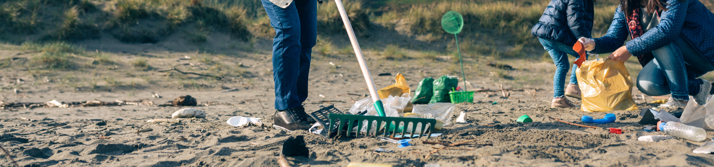
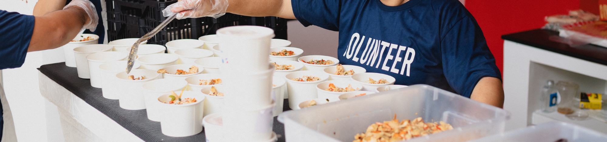

HOME
SOBRE
ONG'S
CONTATOS
ONGs de Reciclagem
ONGs de Cuidado aos Idosos
ONGs de Proteção aos Animais
ONGs de Apoio à Saúde

ONGs de Coleta de Lixo

ONGs de Combate à Fome
ONGs de Reciclagem
ONGs de Cuidado aos Idosos
ONGs de Proteção aos Animais
ONGs de Apoio à Saúde
ONGs de Coleta de Lixo
ONGs de Combate à Fome
Próximos Eventos
21/06/2025 - 06h às 11h
ONG Cuidar é Viver - Multirão pela vida
Um mutirão de saúde e acolhimento! Durante o Dia do Cuidado Comunitário, oferecemos atendimento médico e psicológico gratuito, vacinação, testes rápidos, rodas de conversa sobre saúde mental e atividades para idosos, mulheres e jovens. É a comunidade cuidando de si mesma, com amor e informação.
21/06/2025 - 08h às 11h
ONG garras do bem - feirinha de patas
Um sábado especial para adotar, amar e ajudar! A Feirinha de Patas reúne animais resgatados prontos para encontrar um novo lar, além de contar com venda de produtos pet, oficinas educativas para crianças, arrecadação de ração e um bate-papo com veterinários e protetores. Traga sua família (inclusive a de quatro patas)!
22/06/2025 - 19h
ONG Barriga Cheia - Banquete Popular Semanal
Uma grande mesa no coração da cidade. A Cozinha Solidária na Praça serve refeições quentes e nutritivas para pessoas em situação de vulnerabilidade, com o apoio de chefs voluntários e moradores locais. Além da comida, o evento oferece cortes de cabelo, atividades culturais e escuta ativa — porque dignidade também se serve com afeto.